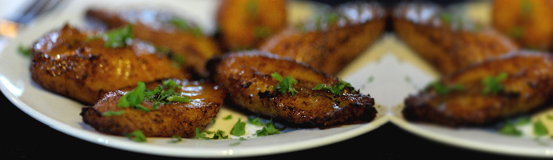
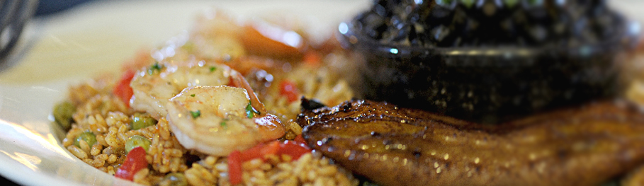

8 West Pennsylvania Avenue,
Towson, MD 21204
410.494.8222
hours
- Monday - Wednesday 11 am - 9 pm
- Thursday - Saturday 11 am - 11 pm
- Sunday 12 pm - 9 pm




vvvv menu vvvv
about
-
Cuban-born Marta Ines Quintana came to the United States as a young child on one of the last Freedom Flights in January 1962 with her extended family. The Cuban traditions, flavors, aromas and lifestyle traveled with them to their new home in Hollywood, Florida. It was at her mother’s and grandmother’s apron strings she first learned the preparation of traditional foods of her homeland. Their minimal food budget did not hamper turning out fresh “fresco, siempre fresco”, delicious food from the Quintana’s tiny kitchen. From this humble beginning, Marta developed her personal style of cooking that she carries through to this day, understanding early on that by using fresh ingredients, she too could capture the essence of Cuban flavor, please palates, and make these dishes accessible to many people.
Chef Marta’s first commercial culinary endeavor was the launch of her Havana Road Artisanal Products with a line of Cuban salsas, condiments and sauces, a number of them gluten-free, quickly made the shelves of regional grocery stores.
Her restaurant, Havana Road Cuban Café in Towson Maryland, brings the family recipes with Marta’s touches to numerous restaurant goers. Food service was next on her list with renditions of her Havana Road Cuban Café recipes being served at the food bars at Whole Foods. And now, her Havana Road complete Cuban dinners are available in a “fresh pac” and can be found on the prepared foods refrigerated shelves at regional Whole Foods. Marta will tell you it is the first “fresh pac” Cuban food in the United States.
With both a cookbook and cooking show in development Chef Quintana, a Towson State Public Relations graduate, taps into and goes after with gusto every opportunity to promote Cuban cuisine.
before havana road
Before embarking on her career as a chef, Marta served as Vice President of Sales and Marketing for Premium Health Services, a pharmaceutical distribution company in Columbia, Maryland. Prior to that, in 1996 Marta launched API Conference Management, a special events marketing firm, and enjoyed a successful eight-year run as president. Marta also was a corporate director of marketing and sales for a number of hospitality companies, working with Potomac Hotel Group in Washington, DC, Aramark in Mt. Washington, and Sheraton Baltimore North.